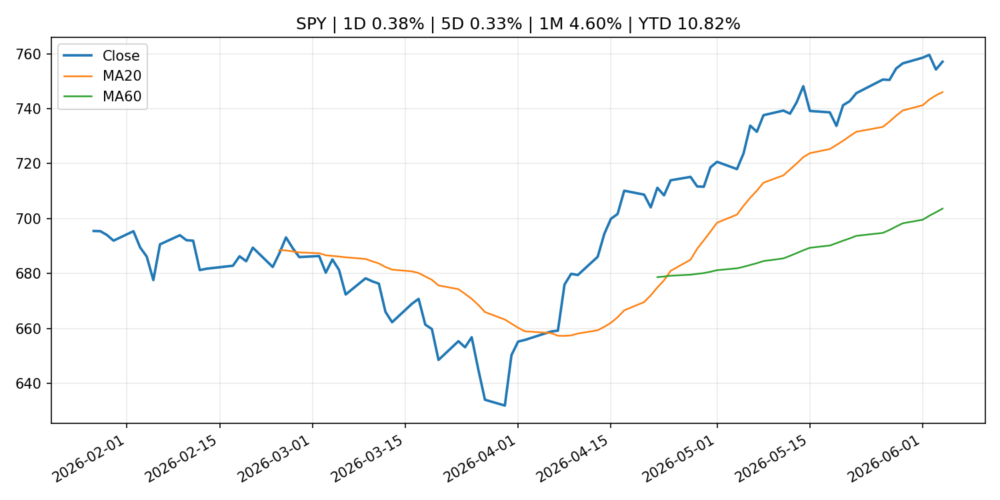
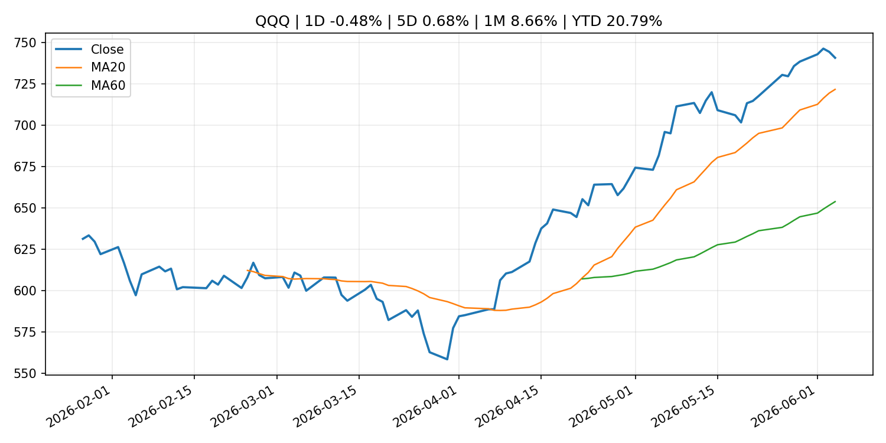
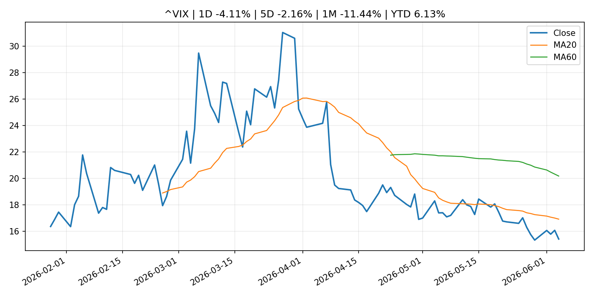
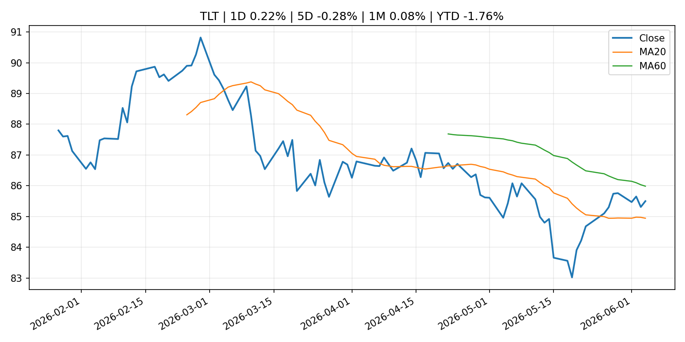
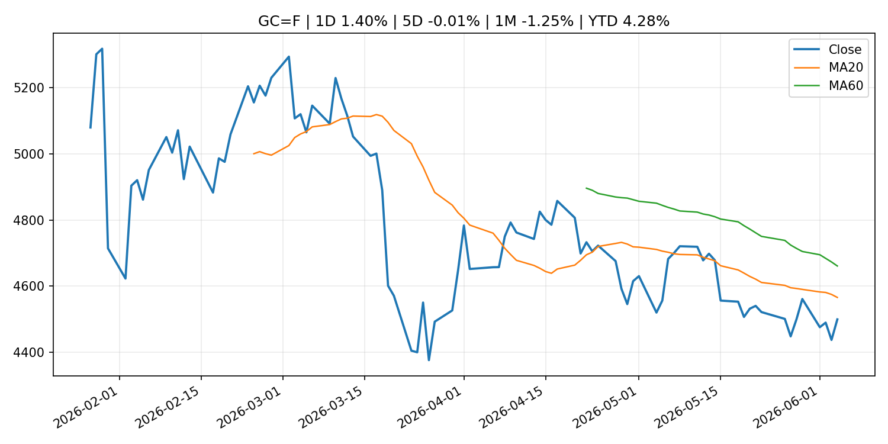
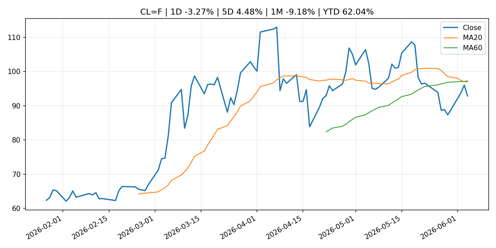
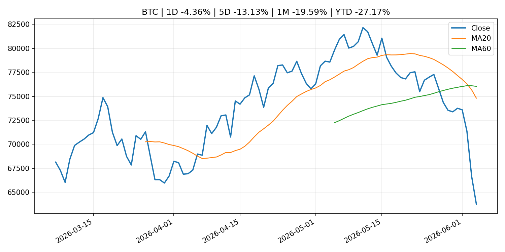
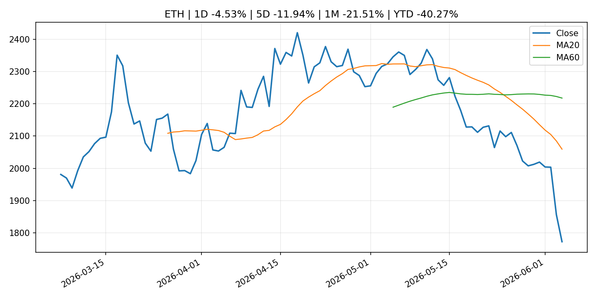
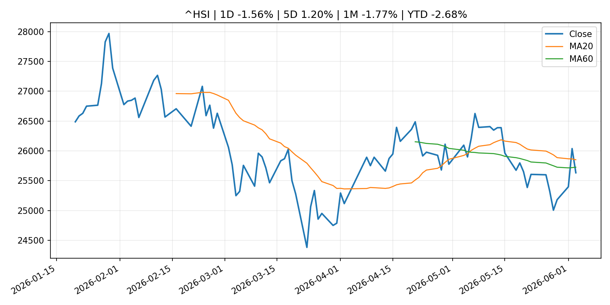

Global Macro Morning Briefing - 2026-06-05
Not financial advice / 非投资建议。
0. 今日总览
- 市场状态：unknown。市场信号不足，暂不判断明确状态。
- 今日三大主线：
- central_bank_decision: South Korea is the ultimate backdoor tech play — but stock investors now face a looming threat
- fiscal_policy: Russia sanctions British teenager for alleging A7A5 use in funding Ukraine war
- regulation: SEC Announces New Members of Small Business Capital Formation Advisory Committee
- 一句话结论：今日晨报重点关注：央行决策会重定价利率、汇率、久期资产和风险资产。；财政和贸易政策会影响增长、通胀、企业利润和跨境资本流。。跨资产方面，SPY 1D 0.38%；QQQ 1D -0.48%；^VIX 1D -4.11%；TLT 1D 0.22%；GC=F 1D 1.40%；CL=F 1D -3.27%；BTC 1D -4.36%；ETH 1D -4.53%；市场信号不足，暂不判断明确状态。政策、通胀、利率、美元、美债、能源和加密监管仍是主要观察线索。所有结论仅基于公开数据与短摘要整理，不构成投资建议。
1. 隔夜跨资产市场
- 美股：SPY 1D 0.38%，QQQ 1D -0.48%，整体趋势需结合 VIX 和利率确认。
- 美债/美元：TLT 1D 0.22%，美元指数 1D -0.10%，是判断折现率压力的核心线索。
- 黄金/原油：黄金 1D 1.40%，原油 1D -3.27%，用于观察避险、通胀和地缘风险。
- 加密：BTC 1D -4.36%，ETH 1D -4.53%，关注是否独立于纳指走出加密自身行情。
- 港股/A股：恒生 1D -1.56%，沪深300/上证 1D n/a，重点看中国政策预期与人民币线索。
- 风险观察：关注后续数据是否确认当前跨资产信号。
US_EQUITY
| symbol | latest close | 1D | 5D | 1M | YTD | trend |
|---|---|---|---|---|---|---|
| SPY | 757.09 | 0.38% | 0.33% | 4.60% | 10.82% | strong_uptrend |
| QQQ | 740.61 | -0.48% | 0.68% | 8.66% | 20.79% | strong_uptrend |
| DIA | 516.70 | 1.66% | 1.90% | 4.82% | 6.84% | strong_uptrend |
| IWM | 292.01 | 1.51% | -0.01% | 3.34% | 17.38% | strong_uptrend |
| VTI | 373.38 | 0.47% | 0.46% | 4.59% | 11.02% | strong_uptrend |
US_MACRO_MARKET
| symbol | latest close | 1D | 5D | 1M | YTD | trend |
|---|---|---|---|---|---|---|
| ^VIX | 15.40 | -4.11% | -2.16% | -11.44% | 6.13% | strong_downtrend |
| DX-Y.NYB | 99.43 | -0.10% | 0.42% | 0.97% | 1.03% | range_bound |
| TLT | 85.50 | 0.22% | -0.28% | 0.08% | -1.76% | range_bound |
| IEF | 94.12 | 0.13% | -0.44% | -0.43% | -2.04% | downtrend |
COMMODITIES
| symbol | latest close | 1D | 5D | 1M | YTD | trend |
|---|---|---|---|---|---|---|
| GC=F | 4,498.90 | 1.40% | -0.01% | -1.25% | 4.28% | downtrend |
| SI=F | 74.19 | 0.98% | -1.92% | 1.49% | 5.16% | range_bound |
| CL=F | 92.88 | -3.27% | 4.48% | -9.18% | 62.04% | strong_downtrend |
| BZ=F | 95.21 | -2.66% | 1.60% | -13.34% | 56.72% | strong_downtrend |
| NG=F | 3.36 | 4.39% | 2.13% | 20.34% | -7.27% | strong_uptrend |
| HG=F | 6.53 | 0.68% | 2.02% | 9.79% | 15.69% | uptrend |
HK_MARKET
| symbol | latest close | 1D | 5D | 1M | YTD | trend |
|---|---|---|---|---|---|---|
| ^HSI | 25,633.21 | -1.56% | 1.20% | -1.77% | -2.68% | range_bound |
| 0700.HK | 459.00 | -1.59% | 8.00% | -2.80% | -26.32% | range_bound |
| 9988.HK | 123.50 | -2.45% | 1.40% | -5.87% | -17.11% | range_bound |
| 3690.HK | 78.60 | -2.24% | 7.23% | -5.92% | -24.86% | strong_downtrend |
| 1810.HK | 28.38 | -0.70% | -0.63% | -6.83% | -29.54% | strong_downtrend |
| 1211.HK | 91.80 | -1.55% | 1.66% | -9.11% | -7.04% | strong_downtrend |
CRYPTO
| symbol | latest close | 1D | 5D | 1M | YTD | trend |
|---|---|---|---|---|---|---|
| BTC | 63,743.92 | -4.36% | -13.13% | -19.59% | -27.17% | strong_downtrend |
| ETH | 1,771.93 | -4.53% | -11.94% | -21.51% | -40.27% | strong_downtrend |
| SOLANA | 68.58 | -7.29% | -16.31% | -24.70% | -44.93% | strong_downtrend |
| BINANCECOIN | 604.34 | -7.04% | -5.94% | -9.98% | -29.99% | range_bound |
| RIPPLE | 1.17 | -2.98% | -11.72% | -17.75% | -36.25% | strong_downtrend |
2. 今日最重要的 10 条新闻
1. South Korea is the ultimate backdoor tech play — but stock investors now face a looming threat
- 来源：MarketWatch Top Stories
- 时间：2026-06-04T22:40:00+00:00
- 地区：US
- 事件类型：central_bank_decision
- 重要性层级：Tier 1
- 一句话摘要：Samsung and SK Hynix are key to soaring South Korean stock market, but a rate hike could trigger a 15% market correction.
- 为什么重要：央行决策会重定价利率、汇率、久期资产和风险资产。
- 可能影响：主要影响 QQQ，方向为 negative，强度 high；鹰派政策提高折现率，压制成长股估值。
- 资产：QQQ 方向：negative 强度：high 原因：鹰派政策提高折现率，压制成长股估值。
- 资产：SPY 方向：negative 强度：medium 原因：更紧政策通常削弱风险偏好。
- 资产：TLT 方向：negative 强度：high 原因：利率上行通常压低长债价格。
- 资产：DXY 方向：positive 强度：high 原因：更高利率预期通常支撑美元。
- 资产：BTC 方向：negative 强度：high 原因：流动性收紧通常压制高 beta 加密资产。
- 原文链接：https://www.marketwatch.com/story/south-korea-is-the-ultimate-backdoor-tech-play-but-stock-investors-now-face-a-looming-threat-25065699?mod=mw_rss_topstories
2. Russia sanctions British teenager for alleging A7A5 use in funding Ukraine war
- 来源：CoinDesk
- 时间：2026-06-04T11:51:53+00:00
- 地区：global
- 事件类型：fiscal_policy
- 重要性层级：Tier 1
- 一句话摘要：Russia sanctions British teenager for alleging A7A5 use in funding Ukraine war
- 为什么重要：财政和贸易政策会影响增长、通胀、企业利润和跨境资本流。
- 可能影响：可能影响利率、汇率、风险资产或大宗商品预期，但当前公开信息不足以判断明确方向。
- 资产：暂无明确资产映射
- 方向：unknown
- 强度：low
- 原因：公开信息不足以判断方向。
- 原文链接：https://www.coindesk.com/policy/2026/06/04/russia-sanctions-british-teenager-for-alleging-a7a5-use-in-funding-ukraine-war
3. SEC Announces New Members of Small Business Capital Formation Advisory Committee
- 来源：SEC Press Releases
- 时间：2026-06-04T14:39:49-04:00
- 地区：US
- 事件类型：regulation
- 重要性层级：Tier 2
- 一句话摘要：The Securities and Exchange Commission today announced five new members of the Small Business Capital Formation Advisory Committee. The new members were appointed to four-year terms and will join the 15 current …
- 为什么重要：监管变化会改变行业盈利预期和资产风险溢价。
- 可能影响：主要影响 BTC，方向为 mixed，强度 high；加密监管或 ETF 进展会改变 BTC 的资金流和风险溢价。
- 资产：BTC 方向：mixed 强度：high 原因：加密监管或 ETF 进展会改变 BTC 的资金流和风险溢价。
- 资产：ETH 方向：mixed 强度：high 原因：监管框架会影响 ETH 产品化和机构参与度。
- 资产：COIN 方向：mixed 强度：medium 原因：监管清晰度和执法风险会影响交易平台估值。
- 资产：crypto market 方向：mixed 强度：high 原因：信息影响整个加密市场结构，但方向取决于细节。
- 原文链接：https://www.sec.gov/newsroom/press-releases/2026-52-sec-announces-new-members-small-business-capital-formation-advisory-committee
4. Apyx's STRC collateralized stablecoin suffers a brief depeg. Protocol says its a feature, not bug
- 来源：CoinDesk
- 时间：2026-06-04T06:35:17+00:00
- 地区：global
- 事件类型：crypto_market_structure
- 重要性层级：Tier 2
- 一句话摘要：Apyx's STRC collateralized stablecoin suffers a brief depeg. Protocol says its a feature, not bug
- 为什么重要：加密市场结构和监管变化会影响 BTC、ETH 及相关股票的风险溢价。
- 可能影响：主要影响 BTC，方向为 mixed，强度 high；加密监管或 ETF 进展会改变 BTC 的资金流和风险溢价。
- 资产：BTC 方向：mixed 强度：high 原因：加密监管或 ETF 进展会改变 BTC 的资金流和风险溢价。
- 资产：ETH 方向：mixed 强度：high 原因：监管框架会影响 ETH 产品化和机构参与度。
- 资产：COIN 方向：mixed 强度：medium 原因：监管清晰度和执法风险会影响交易平台估值。
- 资产：crypto market 方向：mixed 强度：high 原因：信息影响整个加密市场结构，但方向取决于细节。
- 原文链接：https://www.coindesk.com/markets/2026/06/04/apyx-s-stablecoin-suffers-a-brief-depeg-protocol-says-its-a-feature-not-bug
5. Speech by Governor UEDA at the Kisaragi-kai Meeting in Tokyo
- 来源：Bank of Japan Announcements
- 时间：2026-06-03T17:30:00+09:00
- 地区：Japan
- 事件类型：central_bank_speech
- 重要性层级：Tier 2
- 一句话摘要：Speech by Governor UEDA at the Kisaragi-kai Meeting in Tokyo
- 为什么重要：央行官员表态可能影响市场对下一次会议的定价。
- 可能影响：可能影响利率、汇率、风险资产或大宗商品预期，但当前公开信息不足以判断明确方向。
- 资产：暂无明确资产映射
- 方向：unknown
- 强度：low
- 原因：公开信息不足以判断方向。
- 原文链接：http://www.boj.or.jp/en/about/press/koen_2026/ko260603a.htm
6. Why tokenization is an ETF-style market structure revolution
- 来源：CoinDesk
- 时间：2026-06-04T14:44:07+00:00
- 地区：global
- 事件类型：other
- 重要性层级：Tier 3
- 一句话摘要：Why tokenization is an ETF-style market structure revolution
- 为什么重要：这条信息暂未匹配到重大宏观、政策或市场事件，更适合作为背景跟踪。
- 可能影响：主要影响 BTC，方向为 mixed，强度 high；加密监管或 ETF 进展会改变 BTC 的资金流和风险溢价。
- 资产：BTC 方向：mixed 强度：high 原因：加密监管或 ETF 进展会改变 BTC 的资金流和风险溢价。
- 资产：ETH 方向：mixed 强度：high 原因：监管框架会影响 ETH 产品化和机构参与度。
- 资产：COIN 方向：mixed 强度：medium 原因：监管清晰度和执法风险会影响交易平台估值。
- 资产：crypto market 方向：mixed 强度：high 原因：信息影响整个加密市场结构，但方向取决于细节。
- 原文链接：https://www.coindesk.com/opinion/2026/06/04/why-tokenization-is-an-etf-style-market-structure-revolution
7. Bitcoin’s sagging price has crypto bears taking a victory lap. Why it’s too soon to count it out.
- 来源：MarketWatch Top Stories
- 时间：2026-06-04T22:29:00+00:00
- 地区：US
- 事件类型：other
- 重要性层级：Tier 3
- 一句话摘要：While U.S. stocks have kept notching record highs, bitcoin is sliding to its weakest level in months.
- 为什么重要：这条信息暂未匹配到重大宏观、政策或市场事件，更适合作为背景跟踪。
- 可能影响：更偏背景信息，短期市场影响可能有限。
- 资产：暂无明确资产映射
- 方向：unknown
- 强度：low
- 原因：公开信息不足以判断方向。
- 原文链接：https://www.marketwatch.com/story/bitcoins-sagging-price-has-crypto-bears-taking-a-victory-lap-why-its-too-soon-to-count-it-out-edf1d8d8?mod=mw_rss_topstories
3. 政策与央行观察
1. South Korea is the ultimate backdoor tech play — but stock investors now face a looming threat
- 来源：MarketWatch Top Stories
- 时间：2026-06-04T22:40:00+00:00
- 地区：US
- 事件类型：central_bank_decision
- 重要性层级：Tier 1
- 一句话摘要：Samsung and SK Hynix are key to soaring South Korean stock market, but a rate hike could trigger a 15% market correction.
- 为什么重要：央行决策会重定价利率、汇率、久期资产和风险资产。
- 可能影响：主要影响 QQQ，方向为 negative，强度 high；鹰派政策提高折现率，压制成长股估值。
- 资产：QQQ 方向：negative 强度：high 原因：鹰派政策提高折现率，压制成长股估值。
- 资产：SPY 方向：negative 强度：medium 原因：更紧政策通常削弱风险偏好。
- 资产：TLT 方向：negative 强度：high 原因：利率上行通常压低长债价格。
- 资产：DXY 方向：positive 强度：high 原因：更高利率预期通常支撑美元。
- 资产：BTC 方向：negative 强度：high 原因：流动性收紧通常压制高 beta 加密资产。
- 原文链接：https://www.marketwatch.com/story/south-korea-is-the-ultimate-backdoor-tech-play-but-stock-investors-now-face-a-looming-threat-25065699?mod=mw_rss_topstories
2. Russia sanctions British teenager for alleging A7A5 use in funding Ukraine war
- 来源：CoinDesk
- 时间：2026-06-04T11:51:53+00:00
- 地区：global
- 事件类型：fiscal_policy
- 重要性层级：Tier 1
- 一句话摘要：Russia sanctions British teenager for alleging A7A5 use in funding Ukraine war
- 为什么重要：财政和贸易政策会影响增长、通胀、企业利润和跨境资本流。
- 可能影响：可能影响利率、汇率、风险资产或大宗商品预期，但当前公开信息不足以判断明确方向。
- 资产：暂无明确资产映射
- 方向：unknown
- 强度：low
- 原因：公开信息不足以判断方向。
- 原文链接：https://www.coindesk.com/policy/2026/06/04/russia-sanctions-british-teenager-for-alleging-a7a5-use-in-funding-ukraine-war
3. SEC Announces New Members of Small Business Capital Formation Advisory Committee
- 来源：SEC Press Releases
- 时间：2026-06-04T14:39:49-04:00
- 地区：US
- 事件类型：regulation
- 重要性层级：Tier 2
- 一句话摘要：The Securities and Exchange Commission today announced five new members of the Small Business Capital Formation Advisory Committee. The new members were appointed to four-year terms and will join the 15 current …
- 为什么重要：监管变化会改变行业盈利预期和资产风险溢价。
- 可能影响：主要影响 BTC，方向为 mixed，强度 high；加密监管或 ETF 进展会改变 BTC 的资金流和风险溢价。
- 资产：BTC 方向：mixed 强度：high 原因：加密监管或 ETF 进展会改变 BTC 的资金流和风险溢价。
- 资产：ETH 方向：mixed 强度：high 原因：监管框架会影响 ETH 产品化和机构参与度。
- 资产：COIN 方向：mixed 强度：medium 原因：监管清晰度和执法风险会影响交易平台估值。
- 资产：crypto market 方向：mixed 强度：high 原因：信息影响整个加密市场结构，但方向取决于细节。
- 原文链接：https://www.sec.gov/newsroom/press-releases/2026-52-sec-announces-new-members-small-business-capital-formation-advisory-committee
4. Apyx's STRC collateralized stablecoin suffers a brief depeg. Protocol says its a feature, not bug
- 来源：CoinDesk
- 时间：2026-06-04T06:35:17+00:00
- 地区：global
- 事件类型：crypto_market_structure
- 重要性层级：Tier 2
- 一句话摘要：Apyx's STRC collateralized stablecoin suffers a brief depeg. Protocol says its a feature, not bug
- 为什么重要：加密市场结构和监管变化会影响 BTC、ETH 及相关股票的风险溢价。
- 可能影响：主要影响 BTC，方向为 mixed，强度 high；加密监管或 ETF 进展会改变 BTC 的资金流和风险溢价。
- 资产：BTC 方向：mixed 强度：high 原因：加密监管或 ETF 进展会改变 BTC 的资金流和风险溢价。
- 资产：ETH 方向：mixed 强度：high 原因：监管框架会影响 ETH 产品化和机构参与度。
- 资产：COIN 方向：mixed 强度：medium 原因：监管清晰度和执法风险会影响交易平台估值。
- 资产：crypto market 方向：mixed 强度：high 原因：信息影响整个加密市场结构，但方向取决于细节。
- 原文链接：https://www.coindesk.com/markets/2026/06/04/apyx-s-stablecoin-suffers-a-brief-depeg-protocol-says-its-a-feature-not-bug
5. Speech by Governor UEDA at the Kisaragi-kai Meeting in Tokyo
- 来源：Bank of Japan Announcements
- 时间：2026-06-03T17:30:00+09:00
- 地区：Japan
- 事件类型：central_bank_speech
- 重要性层级：Tier 2
- 一句话摘要：Speech by Governor UEDA at the Kisaragi-kai Meeting in Tokyo
- 为什么重要：央行官员表态可能影响市场对下一次会议的定价。
- 可能影响：可能影响利率、汇率、风险资产或大宗商品预期，但当前公开信息不足以判断明确方向。
- 资产：暂无明确资产映射
- 方向：unknown
- 强度：low
- 原因：公开信息不足以判断方向。
- 原文链接：http://www.boj.or.jp/en/about/press/koen_2026/ko260603a.htm
4. 市场异动与图表
- QQQ 下跌 -0.48%
- VIX 下跌 -4.11%
- Gold 上涨 1.40%
- Oil 下跌 -3.27%
- BTC 下跌 -4.36%
- ETH 下跌 -4.53%
SPY

QQQ

^VIX

TLT

GC=F

CL=F

BTC

ETH

^HSI

5. 华尔街与机构公开观点
- 暂无可靠公开观点。
6. 今日重点关注
- 经济数据：经济数据：暂无可靠公开日历数据；如配置经济日历源后可自动填充。
- 央行讲话：央行讲话：暂无可靠公开日历数据；重点跟踪 Fed、ECB、BoJ、PBOC 官网 RSS。
- 财报：财报：暂无可靠数据。
- 政策事件：政策事件：暂无可靠数据。
- 风险提醒：风险提醒：关注数据源失败项、突发地缘风险、利率和美元的二阶反应。
7. 英文金融表达与宏观概念
- terminal rate：终端利率，市场预期本轮加息周期的最高政策利率。 例句：A higher terminal rate can pressure growth stocks.
- risk-off：避险模式，资金偏向美元、国债、黄金等防御资产。 例句：A geopolitical shock can push markets into risk-off mode.
- market structure：市场结构，指交易、托管、清算、ETF、监管等制度安排。 例句：Crypto market structure rules can affect institutional participation.
- inflation expectations：通胀预期，指家庭、企业或市场对未来通胀的预估。 例句：Inflation expectations can shape wage bargaining and bond yields.
- real yield：实际收益率，名义利率扣除通胀预期后的收益率。 例句：Gold often reacts more to real yields than nominal yields.
- soft landing：软着陆，指通胀回落而经济避免明显衰退。 例句：Markets often rally when data support a soft landing.
8. 背景材料
- Bitcoin’s sagging price has crypto bears taking a victory lap. Why it’s too soon to count it out.（MarketWatch Top Stories，other）：While U.S. stocks have kept notching record highs, bitcoin is sliding to its weakest level in months.
- 'Dr. Doom'-backed Atlas Capital CEO says bitcoin could crash 70% before reaching $500,000（CoinDesk，other）：'Dr. Doom'-backed Atlas Capital CEO says bitcoin could crash 70% before reaching $500,000
- Why tokenization is an ETF-style market structure revolution（CoinDesk，other）：Why tokenization is an ETF-style market structure revolution
- CoinDesk 20 performance update: Bitcoin Cash (BCH), up 1.5%, is only gainer（CoinDesk，other）：CoinDesk 20 performance update: Bitcoin Cash (BCH), up 1.5%, is only gainer
- Strategy's Saylor's explanation for bitcoin's slide isn't what bears think（CoinDesk，other）：Strategy's Saylor's explanation for bitcoin's slide isn't what bears think
- Bitcoin bounces, HYPE falls, NEAR gets demolished as crypto deals with a wipe out（CoinDesk，other）：Bitcoin bounces, HYPE falls, NEAR gets demolished as crypto deals with a wipe out
- Standard Chartered's three 'Ifs' that stand between bitcoin and a market low（CoinDesk，other）：Standard Chartered's three 'Ifs' that stand between bitcoin and a market low
- Bitcoin steadies above $60,000 while derivatives send an unambiguous warning（CoinDesk，other）：Bitcoin steadies above $60,000 while derivatives send an unambiguous warning
- This bitcoin metric has marked every bear market bottom, and it's just flashed again（CoinDesk，other）：This bitcoin metric has marked every bear market bottom, and it's just flashed again
- Christine Lagarde: Women and leadership: widening the pipeline（ECB Press Releases，other）：Christine Lagarde: Women and leadership: widening the pipeline
- Goldman Sachs teams with Apex, Archax for tokenized real estate fund（CoinDesk，other）：Goldman Sachs teams with Apex, Archax for tokenized real estate fund
- Polymarket says No for May, Yes for June after Strategy's recent bitcoin sale（CoinDesk，other）：Polymarket says No for May, Yes for June after Strategy's recent bitcoin sale
- BTC, ETH, SOL and XRP ETFs bleed $4.4 billion over 13 sessions, only HYPE in green（CoinDesk，other）：BTC, ETH, SOL and XRP ETFs bleed $4.4 billion over 13 sessions, only HYPE in green
- (Research Paper) Aging-Related Depreciation of Office Rents and Renovation Effects（Bank of Japan Announcements，research_publication）：(Research Paper) Aging-Related Depreciation of Office Rents and Renovation Effects
- Bitcoin briefly drops below $62,000 as $1.5 billion in crypto longs get wiped out（CoinDesk，other）：Bitcoin briefly drops below $62,000 as $1.5 billion in crypto longs get wiped out
- Live markets: Bitcoin selloff stalls as key indicator signals oversold conditions（CoinDesk，other）：Live markets: Bitcoin selloff stalls as key indicator signals oversold conditions
- Bitcoin set to slump to new lows for 2026 after recent sell-off, traders forecast（CNBC Economy，other）：The cryptocurrency is likely to break below its lows hit in early February, traders on prediction market Kalshi believe.
- Piero Cipollone: Europe’s money evolves so people’s freedom to pay remains（ECB Press Releases，other）：Piero Cipollone: Europe’s money evolves so people’s freedom to pay remains
- Frank Elderson: Strengthening operational resilience for the age of AI（ECB Press Releases，other）：Frank Elderson: Strengthening operational resilience for the age of AI
- Sources of Changes in Current Account Balances (Projections for June)（Bank of Japan Announcements，other）：Sources of Changes in Current Account Balances (Projections for June)
9. 数据源、失败项与免责声明
- 采集时间：2026-06-04T23:09:00
- 数据源：公开 RSS、Yahoo Finance、CoinGecko、AKShare、FRED、SEC data.sec.gov，以及用户自有 inputs/reports 文件。
- 合规说明：不绕过 WSJ、Bloomberg、FT、Reuters 等付费墙；对付费媒体只使用公开 RSS 标题、摘要、链接和发布时间。
- 免责声明：Not financial advice / 非投资建议。本项目仅供个人学习、研究和信息整理，不构成投资建议、交易建议或任何收益承诺。
- 失败或跳过的数据源：
- crypto data failed coin=dogecoin
- China market data failed symbol=上证指数: empty dataframe
- China market data failed symbol=深证成指: empty dataframe
- China market data failed symbol=创业板指: empty dataframe
- China market data failed symbol=沪深300: empty dataframe
- China market data failed symbol=中证500: empty dataframe
- China market data failed symbol=科创50: empty dataframe
- FRED_API_KEY not set; skipping FRED macro series
- SEC failed cik=0000320193
- SEC failed cik=0000789019
- SEC failed cik=0001045810
- SEC failed cik=0001318605
- SEC failed cik=0001577552